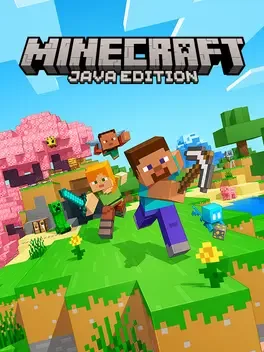
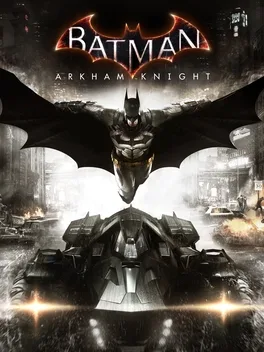
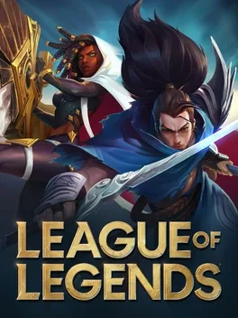
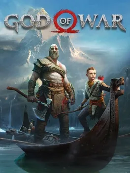
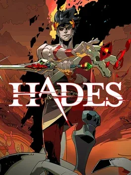
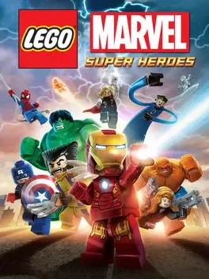
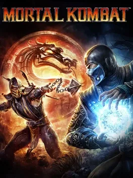
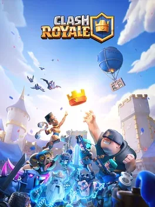
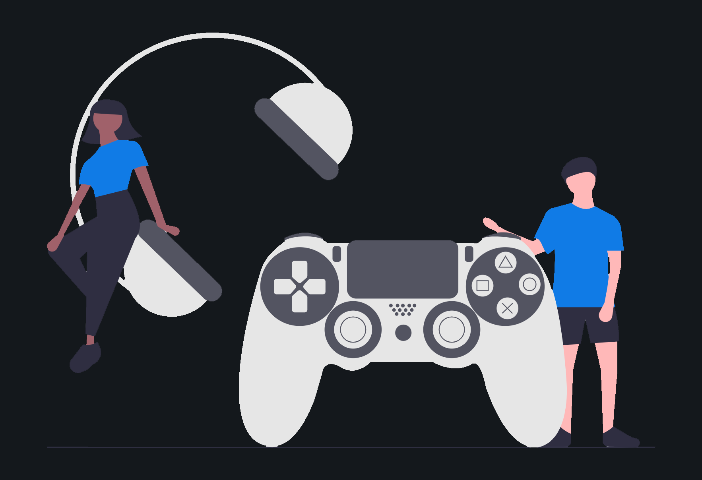
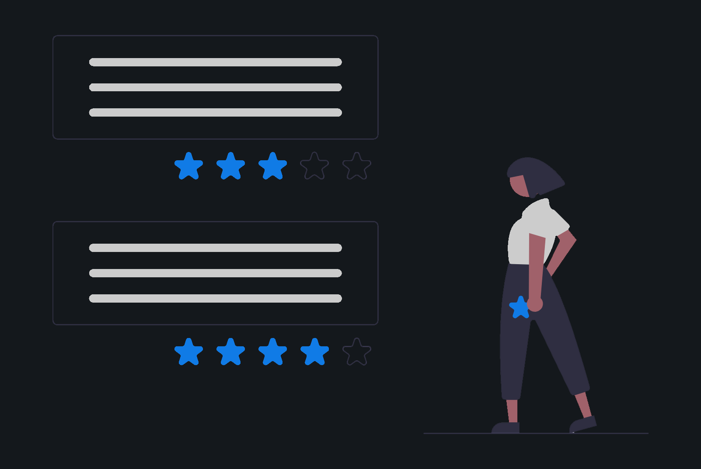

Games, séries e filmes — temos todos











Entre em uma comunidade vibrante e apaixonada por filmes, séries e games. Aqui você pode avaliar, comentar e compartilhar suas experiências com novas mídias, receber recomendações personalizadas e explorar diversos conteúdos. Junte-se a nós e transforme a forma como você descobre e vive o entretenimento.










Nosso algoritmo sugere filmes, séries e games com base em suas avaliações e preferências.
Compartilhe coleções, veja postagens de amigos e descubra novas tendências na comunidade.
Registre, avalie e organize todas as mídias que você já consumiu. Construa seu próprio histórico.
Monte coleções personalizadas para organizar suas mídias favoritas.
Encontre a mídia que procura com filtros avançados por ano, gênero, nota e mais.
Fique por dentro dos lançamentos mais aguardados e veja a empolgação da comunidade.
O Unwind valoriza todos os tipos de mídia, criando uma comunidade inclusiva. Além disso, temos o maior conjunto de interações sociais da categoria, permitindo que você descubra, comente e compartilhe suas experiências com amigos e outros apaixonados por entretenimento. E com nosso algoritmo avançado, você recebe recomendações incrivelmente precisas para suas próximas grandes descobertas.
O Unwind analisa suas avaliações, preferências e interações para sugerir filmes, séries e jogos que você realmente vai gostar. Após a análise nós disponibilizamos um mar de possibilidade para voce explorar.
O Unwind reúne detalhes completos sobre cada mídia: trailers, datas, descrições, classificação etária, nota geral, duração e gêneros. Além disso, há informações específicas: - 🎮 Games: Gameplay, plataformas e estúdios. - 🎬 Filmes: Elenco, diretores e serviços de streaming. - 📺 Séries: Temporadas, episódios e onde assistir.
O Unwind não é uma plataforma de streaming ou emulação. Nosso foco está na descoberta, avaliação e interação sobre mídias, proporcionando a melhor experiência para explorar, compartilhar e discutir filmes, séries e games.
Você pode subir de nível avaliando mais mídias e interagindo ativamente com a comunidade. Quanto mais engajamento, mais títulos e personalizações você desbloqueia!